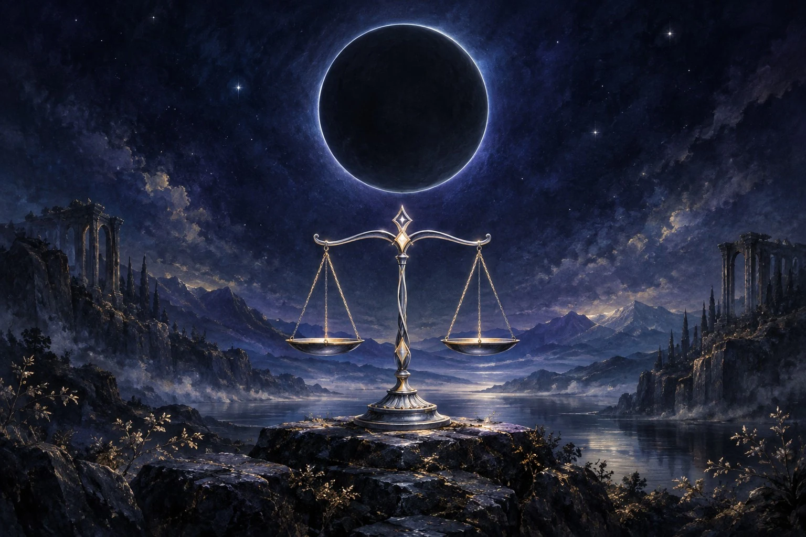

勝負の流れ
6種類の月札を使い、相手と月影を競う対戦ゲームです。
- ラウンドごとに、未使用の月札を1枚選びます。
- 双方が選ぶと、月札が同時に公開されます。
- 有効な「偽りの月」が出た場合は、公開後に模倣先を選びます。
- 月札の効果を解決し、月影を更新します。
- 決着していなければ、次のラウンドへ進みます。
CHOOSE A MODE
遊び方を選んでください
HOW TO PLAY
6種類の月札を使い、相手と月影を競う対戦ゲームです。
双方とも月影10から始まり、月札の効果によって0〜15の間で増減します。
効果をすべて解決したあと、片方だけが0なら、月影が残った側の勝利です。双方が同じラウンドで0になった場合は引き分けです。
途中で決着しなければ全6ラウンドを戦い、最後に月影が多い側が勝利。同じなら引き分けです。
自分の月影を3増やします。
相手の月影を3減らします。

このラウンドの「＋3」「−3」を逆向きにします。

相手が出した月札の効果を無効にします。

公開時に劣勢なら、双方の月影を7にします。
公開後、未使用で模倣可能な月札の効果を選びます。
返照の月：有効な札が1枚なら、このラウンドの「＋3」「−3」を反転します。双方の返照の月が有効なら相殺され、増減は通常どおりです。「新月の誓い」で月影を7にそろえる効果は反転しません。
静止の月：相手の月札の効果を無効にします。双方が静止の月を出した場合は互いに無効化し合い、どちらも相手を止めません。
新月の誓い：札を公開した時点で、自分の月影が相手より少ない場合だけ有効です。有効なら双方の月影を7にします。同じ、または自分の方が多い場合は不発です。
実際の月札を公開したあと、自分の未使用札から模倣先を選び、その効果として扱います。模倣先に選んだ札は使用済みにならず、後のラウンドで使えます。
模倣できるのは「満ちる月」「欠ける月」「返照の月」と、公開時点で条件を満たす「新月の誓い」です。「静止の月」「偽りの月」、すでに使用した札は模倣できません。
相手の静止の月で無効になった場合は模倣先を選びません。候補がない場合も不発となり、どちらの場合も偽りの月だけが使用済みになります。
一度出した月札は、その対戦中はもう使えません。6種類を1枚ずつ使うため、最大6ラウンドです。偽りの月で模倣した札そのものは消費されません。
1人用：コンピューターと対戦します。
2人用：招待コードを使って、友だちとオンライン対戦します。ゲームの月札と勝敗ルールは同じです。